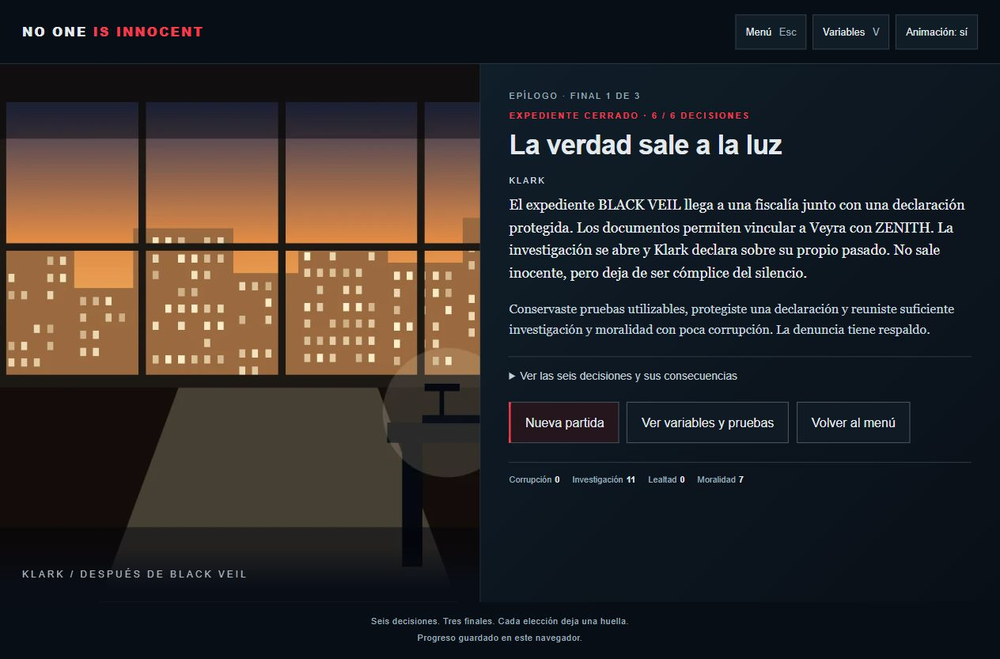
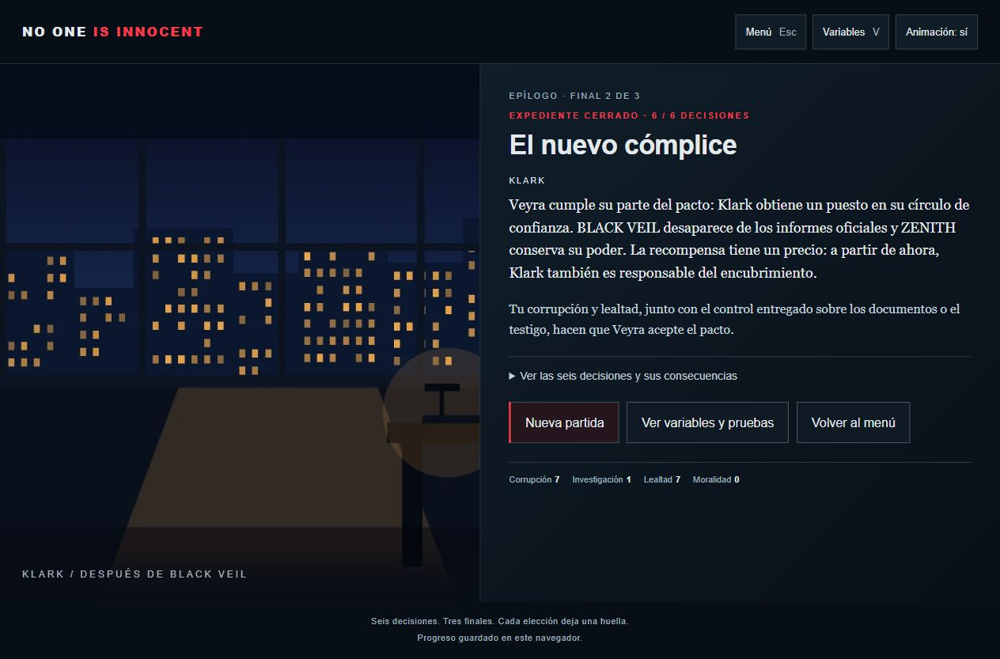
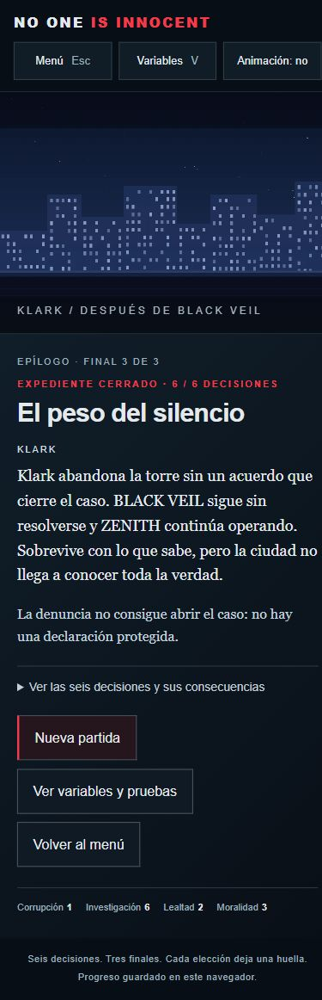

NO ONE
IS INNOCENT
Versión final jugable · Sprint 5 · Revisión del 17 de noviembre de 2026
JugarCódigo en GitHubInformeJuego y revisión técnica completos. El playtesting con personas ajenas al desarrollo está pendiente de resultados reales. La prueba del navegador fue realizada por el asistente.
Tablero del Sprint 5
Responsabilidades informadas por el equipo; las tareas nuevas de esta revisión incluyen asistencia de Codex.
TERMINADO
PUBLICACIÓN
POR HACER CON EL GRUPO
Pruebas y correcciones
729 combinaciones verificadas: 49 llegan a la verdad, 127 al pacto y 553 al silencio. El guardado se recupera en cada punto de las 729 rutas. Se comprobaron menú, ficha, reinicio, recuperación después de recargar, animaciones y vista móvil.
Registro completo · Salida automática






Pieza audiovisual final
Tráiler de 35 segundos con audio original sintetizado y textos visibles. También se puede reproducir desde Créditos en el juego. Ficha y recursos.
Equipo y aportes
| Integrante | Aporte informado |
|---|---|
| Thiago Maya | Parte del código y decisiones del juego. |
| Santiago Olive | Animaciones y diseños. |
| Facundo Felipe | Organización de archivos y manejo de GitHub. |